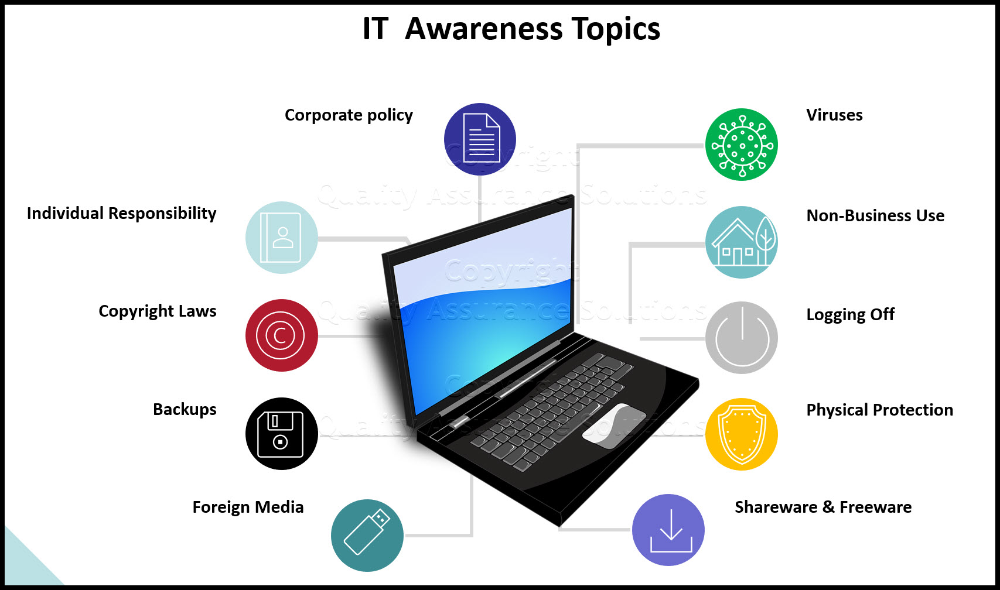

Training and Education
- Typical Education Requirement - Bachelor's Degree in Computer Science, Information Technology, Cybersecurity, or a related field is usually required
- Professional Certifications - Certifications like CompTIA Cybersecurity Analyst (CySA+) validate essential skills in threat detection, data analysis, and risk assessment
- Technical Training and Skills - Understand network fundamentals, operating systems, security tools, and experience with encryption, threat analysis, and risk management
- Hands-On Experience - Internships or entry-level jobs in IT or security roles, Labs, simulations, or capture-the-flag (CTF) challenges, Participation in cybersecurity competitions or projects
- Soft Skills - Analytical thinking, Problem-solving, Attention to detail, Communication